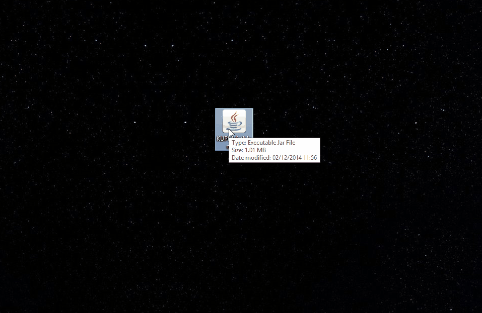
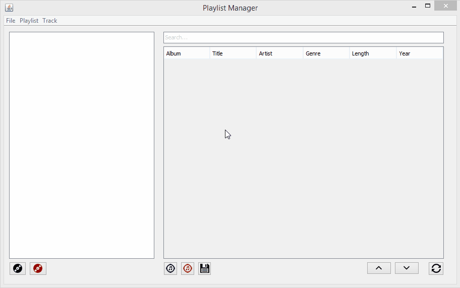
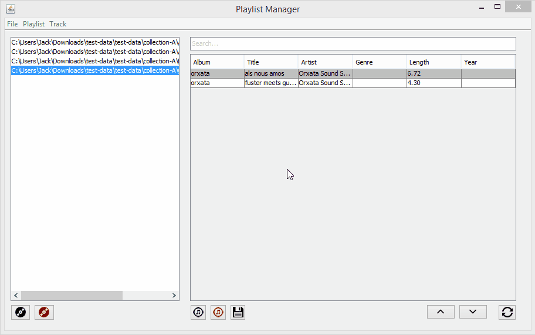

After downloading KUPlaylistManager.jar, simply double click on it to load the program - Note that you will need Java 1.7 installed to run the program, this can be installed from the Oracle Website. The program shown in the following example should be displayed in the center of your screen. Please note you will also need the 'lib' folder distributed with the program - otherwise it will fail to run succesfully.

The KU Playlist Manager allows you to either open up a folder containing .mp3 files, or to select an existing .m3u playlist file for loading, this can be done by selecting the "File" option on the toolbar at the top right of the program, and then selecting "Load Playlist". Alternatively for quick access, this can be done by clicking on the Black Record located in the bottom left or via the key combinationg Ctrl+P. Upon doing this, you will be presented with a file explorer - where you may select multiple mp3's and/or playlists to load. To select multiple, you may use the key combination Ctrl+LMB. Once selected press "Open", and the program will display the playlists in the left hand column. Following this, you may then opt to remove playlists by selecting one or multiple in the left hand pane, to select multiple playlists, again you may use Ctrl+LMB.You may then either select File > Remove Folder/Playlists from the toolbar, or press the red record button in the left hand corner. Alternatively you may use the key combination Shift+P.


Once opened, the KU Playlist Manager allows you access to some basic operations to manage songs in your playlist in the form of adding and removing tracks. Tracks can be added four ways - by selecting Track > Add Tracks from the toolbar, via selecting the black ringed music icon at the bottom, via the key combination Ctrl+T or by manually adding them to the playlist file or folder in question and selecting clicking the refresh icon in the bottom right. Inversely, tracks may be removed by selecting Track > Remove Tracks from the toolbar, via the red ringed music icon at the bottom, via the key combination Shift+T or by manually removing them then refreshing the manager.